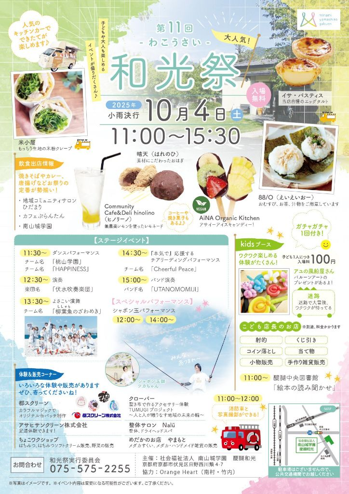

和光祭 実施状況
読み込み中…
和光祭 社会福祉法人 南山城学園
第 12 回
- わこうさい -
2026年 10月17日土
11:00 〜 15:30
会場：社会福祉法人 南山城学園 醍醐和光（京都市伏見区日野西川頬4-7）

天候・警報の状況により内容を変更する場合があります。最新情報はこの欄でお知らせします。
読み込み中…
※ 判断は当日 午前8時30分 を目安に行い、状況が変わり次第このページを更新します。開催中に気象警報が発令された場合は、途中で内容を変更・中止することがあります。
屋外ステージで一日を通してにぎやかなプログラムをお届けします。
雨天時のご案内：ステージイベントは屋外開催のため、雨天の場合はステージのみ中止とし、飲食販売・こどもブースのみ実施する場合があります。実施状況は「当日の開催状況」でご確認ください。
キッチンカーや地域のお店、学園の事業所が出店します。
ワクワク楽しめる体験がたくさん！ガチャガチャ1回付き。
※景品・料金がかかります
駐車場はございません。公共交通機関でお越しください。近隣への路上駐車はご遠慮いただきますようお願いいたします。
チラシ・掲示物に使う正式な固定QRコードです。QRコードと読み取り先URLは今後変更しません。
開催状況を確認する 最新情報をチェック
開催状況へ